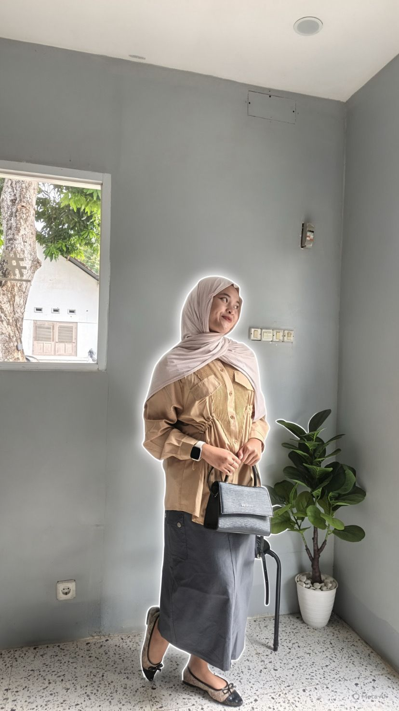

Halo, Saya Ainum 👋
Halo Everyone!Perkenalkaan Saya atas nama Ainum Sri Mulyani Danial, biasa di panggil Ainum atau Rani, Saya Lahir di Lajaoa, pada tanggal 18 bulan 2 tahun 2010, Saya memiliki hobi yaitu menari, >
Saya adalah seorang pelajar yang senang belajar hal-hal baru dan mengembangkan kemampuan diri.
Biodata Saya
| Data | Keterangan |
|---|---|
| Nama Lengkap | Ainum Sri Mulyani |
| Nama Panggilan | Ainum |
| Sekolah | SMKN 3 Soppeng |
| Jurusan | Teknik Jaringan Komputer dan Telekomunikasi |
| Kelas | X TJKT |
| Asal | Soppeng, Sulawesi Selatan |
Tentang Saya
Saya merupakan seorang pelajar yang memiliki semangat untuk belajar dan mencoba berbagai hal baru.
Saya tertarik dengan dunia teknologi komputer, seni tari, kegiatan sekolah, dan berbagai kegiatan positif lainnya.
Hobi Saya
Beberapa hobi yang saya sukai:
- 💃 Menari
- 💻 Belajar komputer
- 🎧 Mendengarkan musik
- 📸 Fotografi
- 🎬 Mengedit video
- 👭 Berkumpul bersama teman
Keahlian
- HTML dasar
- CSS dasar
- Jaringan komputer
- Microsoft Office
- Editing foto dan video
- Seni tari
Media Sosial
Temukan saya di media sosial:
- 📷 Instagram : Instagram Saya
- 🎵 TikTok : TikTok Saya
- 💻 GitHub : GitHub Saya
Galeri Saya
Beberapa dokumentasi kegiatan saya:

Kegiatan 1

Kegiatan 2

Kegiatan 3

Kegiatan 4

Kegiatan 5

Kegiatan 6
Cita-Cita
Saya ingin menjadi seseorang yang sukses, membahagiakan orang tua, dan dapat meraih cita-cita yang saya impikan.
Motto Hidup
"Terus belajar, terus berusaha, dan jangan takut mencoba hal baru."
📖 Buku Tamu
Silakan isi buku tamu dengan nama dan pesan setelah mengunjungi website saya.
Kontak
Untuk menghubungi saya, silakan melalui media sosial yang tersedia di website ini.